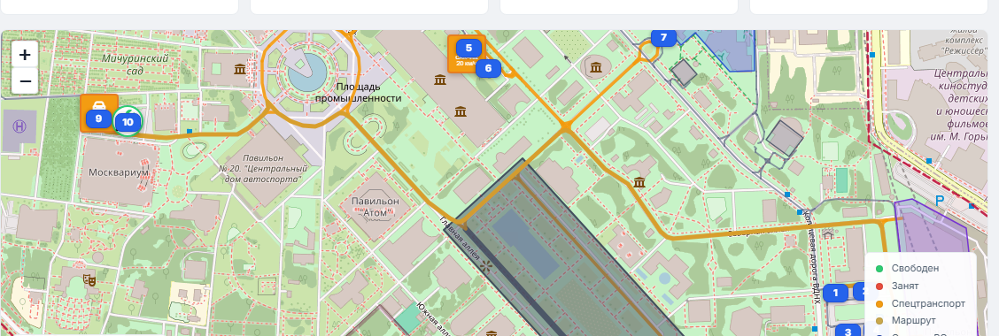
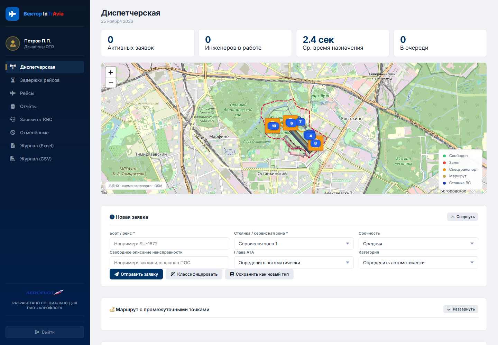
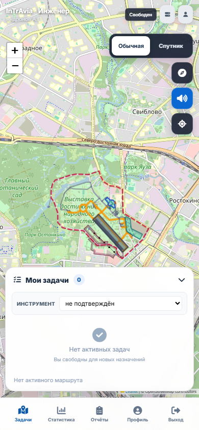
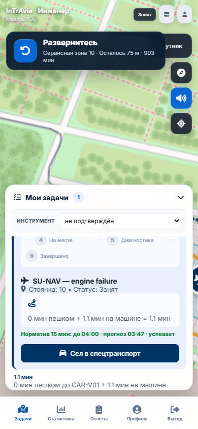
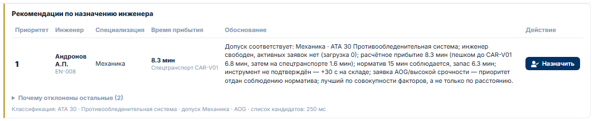

ФИНАЛЬНЫЙ ЭТАП · УМНАЯ ДИСПЕТЧЕРИЗАЦИЯ ОТО
InTrAvia
маршрутизация, динамическая обстановка
и внештатные ситуации
Испытательный полигон ВДНХ · 10 сервисных зон · 3 инженера · 3 единицы спецтранспорта
Норматив прибытия к ВС — 15 минут · пешая скорость — 5 км/ч
REST API /api/v1/track
Flask · SQLite · Leaflet
Capacitor Android
Офлайн + голос
Команда InTrAvia · github.com/MaksimBezdelin/Dorabotka_InTrAvia
Решение в цифрах
Что закрывает финальное задание и как это проверить
02 / 10
15 мин
норматив от фиксации
до прибытия к ВС
5 / 8 / 10 / 20
км/ч — скорости
спецтранспорта
2 Гц
частота GPS
полевого инженера
мс
точность меток
журнала событий
Обязательная часть — максимум
архитектура, функционал, процесс разработки и авторство;
ВДНХ: карта, 10 зон, объекты, 4 типа дорог;
маршруты по графу, промежуточные точки, точки вне графа;
спецтранспорт с реальными скоростями и пересадкой;
интерфейс инженера, полевая работа, приём геопозиции;
роли, статусы, многокритериальный и объяснимый подбор;
MEL/AOG, открытый классификатор, несколько AOG;
норматив, риск, журнал CSV/XLSX.
Дополнительные баллы
маршрут обновляется по мере движения;
текстовые подсказки и озвучивание (ru-RU);
предупреждения диспетчеру о рассогласовании данных;
офлайн-очередь GPS и действий, автосинхронизация;
устаревшая позиция с временем последнего обновления;
авторские элементы: открытый каталог дефектов, альтернативный инженер в риск-уведомлении.
InTrAvia · финальный этап · ВДНХ
25.11.2026
Архитектура
Модули, связи и технологический стек
03 / 10
КЛИЕНТЫ
Диспетчер
HTML · JS · Leaflet карта, очередь, кандидаты
Инженер desktop
HTML · JS · Leaflet заявки, маршрут, отчёт
Мобильный инженер
Capacitor Android GPS 2 Гц · компас · офлайн
MCC · ЦПУ · КВС
HTML · JS цепочка заявки
→
ИНТЕГРАЦИЯ
REST / JSON
HTTPS · контракт /api/v1/track
Живой обмен
GPS 0.5–3 с очереди 1–5 с
Внешние данные
имитатор · OSM-тайлы расписание ВС
→
СЕРВЕРНАЯ ЛОГИКА
Маршрутизатор
NetworkX · графы ВДНХ веса по скорости и типу
Подбор и роли
срочность · позиция · ATA загрузка · этап · риск
Норматив и риск
ETA · прогноз · геозона альтернативный инженер
Журнал и каталоги
JSONL · CSV · XLSX дефекты · ATA · MEL
→
ДАННЫЕ
SQLite
существующая схема без миграций
GeoJSON ВДНХ
дороги · зоны · объекты
JSON-конфиги
аэропорт · дефекты инструмент · привязки
event_log.jsonl
append-only метки UTC, мс
Стек: Python 3.13 · Flask · Flask-CORS · SQLite · NetworkX · HTML/CSS/JS · Leaflet · Capacitor 6 · Gradle 8.2 · openpyxl
Связи: клиенты → REST/JSON → серверные модули → SQLite/GeoJSON/JSONL; сервер читает конфигурацию и возвращает карту, ETA и предупреждения.
InTrAvia · финальный этап · ВДНХ
25.11.2026
Реализованный функционал
Список соответствует фактически работающим экранам и API
04 / 10
Заявка и роли
КВС → MCC/ЦПУ → диспетчер → инженер
валидируемые статусы и история
MEL/AOG устанавливает инженер
переназначение после старта — старший смены
Подбор
срочность, позиция, загрузка, этап
допуск по главе ATA
последствия задержки и норматив
таблица кандидатов + причины отклонения
Маршруты
граф ВДНХ, 4 типа дорог, ВПП исключена
1+ промежуточных точек
точки вне графа, динамический пересчёт
пешком / спецтранспорт 5–20 км/ч
Поле и данные
GPS инженера 2 Гц через API
имитатор: e-XX, v-XX, RA-XXXXX
автофиксация прибытия в зону
офлайн-очередь и автосинхронизация
Норматив и риск
прогноз от фиксации до прибытия
учёт пересадки +10 с и склада +30 с
предупреждение заранее + альтернатива
факт нарушения в журнале
Журнал и каталоги
все события из п. 3.2
метки UTC с миллисекундами
время формирования кандидатов
выгрузка CSV и Excel
Открытый классификатор
свободный текст не теряется
поиск по категориям и ATA
добавление новых типов без кода
классификация в подборе
Мобильный инженер
приём/отклонение, смена статуса
маршрут, ETA, позиция, инструмент
поворотные подсказки и озвучивание
устаревшая GPS-позиция помечается
Ключевые API: /api/v1/track · /api/route · /api/dispatcher/norms · /api/defects · /api/event-log.xlsx
InTrAvia · финальный этап · ВДНХ
25.11.2026
Процесс разработки, контроль качества и авторство
Три обязательных блока — с конкретными фактами
05 / 10
1 · Процесс и автоматизация
Git/GitHub, отдельные ветки и worktree для каждой доработки;
Flask + SQLite: живой сервер и отдельная копия БД для прогонов;
Capacitor/Gradle: сборка debug APK, проверка assets и разрешений;
Playwright: smoke диспетчера, desktop-инженера и мобильной версии;
автоматизация API: curl/python-проверки контрактов и маршрутов.
Пример:
маршрут ВДНХ 4.557 км / 55.19 мин проверен на 1 и 2 точках.
Цикл:
изменение → тест на копии БД → браузерный smoke → коммит.
2 · Контроль качества кода
py_compile перед каждым запуском;
интеграционный прогон: 26 проверок PASS;
контракт /api/v1/track: lon+lng, пакет, 200/400;
браузерный прогон без console/page errors;
ручная проверка маршрута на карте и сценария 15 минут.
Найдено и исправлено:
клиент отправлял lng вместо lon; VDNKh-маршрут брал координаты SVO; VDNKh-транспорт был отключён.
Регрессия:
путь и ETA совпадают на mobile, desktop и у диспетчера.
3 · Авторство кода
Люди: постановка задачи, архитектура, сценарии, приёмка;
ИИ-ассистент (Claude Code): генерация значительной части кода, тестов и документации;
Совместно: человек задавал правила (5 км/ч, запрет рулёжек и ВПП, роли), ИИ реализовывал;
человеческое ревью каждого изменения перед запуском и коммитом;
Пример:
endpoint /api/v1/track сгенерирован ИИ, человек исправил поле lon и UTC-мс;
Пример:
отчёт инженера и MEL/AOG — требования и проверка человеком.
Воспроизводимость: все проверки запускаются на копии БД; рабочая БД и схема не изменяются.
Артефакты QA: tests/final_stage_smoke.py · docs/FINAL_STAGE.md · browser smoke screenshots · APK debug
InTrAvia · финальный этап · ВДНХ
25.11.2026
Адаптация под ВДНХ и маршрутизация
Явный граф с атрибутами, скоростями и запретами
06 / 10
Испытательный полигон
10 сервисных зон обслуживания ВС (полигоны GeoJSON).
463 ребра сети: 129 taxi (ВС), 269 service (инженер/спецтранспорт), 62 pedestrian (инженер), 3 runway (ВС).
Официальная сеть полигона: 801 узел / 842 ребра; спецтранспорт 677 / 706. Taxi/ВПП исключены.
Граф спецтранспорта: 637 / 647; скорость каждого ребра из spd_kmh.
ВПП и рулёжные ограничения исключены из пешего маршрута.
От инженера до стоянки: проекция на ближайшее ребро roads.geojson, затем движение только по рёбрам графа.
Смена локации = замена GeoJSON + JSON-справочников, без кода.
Скоростной режим спецтранспорта
5 км/ч
подъезд к ВС, отъезд, маневрирование
8 км/ч
перрон вдоль терминалов
10 км/ч
перрон к местам стоянок ВС
20 км/ч
остальная территория аэродрома
Посадка/высадка +10 с · склад +30 с
Проверенные маршруты
Зона 9 → зона 1 (склад) → зона 10: 4.557 км, 55.19 мин, 352 координаты.
Инженер → CAR-V01 → зона 10: 8.3 мин (6.8 пешком + 1.6 на машине).
Пешая скорость — ровно 5 км/ч; формула distance / 5 × 60.
Пересчёт при движении: каждые 2.5 с или 8 м.

Официальная сеть полигона задаёт доступ: инженер — service/pedestrian; ВС — taxi/ВПП; ВПП исключена.
InTrAvia · финальный этап · ВДНХ
25.11.2026
Спецтранспорт, промежуточные точки и динамика
Маршрут выбирается сравнением вариантов, а не «всегда на машине»
07 / 10
Пешком vs спецтранспорт
Система считает оба варианта и выбирает быстрейший.
Учтены доступность машины, позиция, посадка +10 с и инструмент +30 с.
Для ВДНХ — 3 машины: CAR-V01, CAR-V02, CAR-V03.
Скорости берутся из рёбер service-дорог, а не из одной константы.
Назначение автомобиля закрепляется за заявкой после принятия.
1+ промежуточных точек
API /api/route принимает waypoints/via.
Поддерживаются координаты, ID стоянки, ID сервисной зоны.
Задержки: склад 30 с, пересадка 10 с.
UI: карточка «Маршрут с промежуточными точками».
Проверено: 1 и 2 промежуточные точки, 229 координат.
Динамика и точки вне графа
Маршрут пересчитывается по GPS инженера и спецтехники.
Старт и финиш вне графа привязываются к ближайшему ребру.
После восстановления связи маршрут пересчитывается автоматически.
Диспетчер видит отклонение > 120 м как рассогласование данных.
Мобильная карта поворачивается по азимуту, как в Яндекс Картах.
Как принимается решение о транспорте
GPS инженера
→
вариант пешком
→
вариант на машине
→
сравнение ETA
→
выбор и резерв
3 машины
CAR-V01 · CAR-V02 · CAR-V03 на сервисных дорогах ВДНХ
+10 секунд
посадка/высадка инженера на спецтранспорт
+30 секунд
получение инструмента на складе, если он не при себе
InTrAvia · финальный этап · ВДНХ
25.11.2026
Интерфейсы и полевая работа
Диспетчер, инженер и мобильное устройство используют один серверный маршрут
08 / 10

Диспетчерская ВДНХ.
Карта, зоны, объекты, кандидаты и журнал.

Мобильный инженер.
GPS, карта, инструмент, офлайн-баннер.

Навигация.
Поворотные подсказки и озвучивание.
Единый источник маршрута: сервер сохраняет ROUTE JSON; desktop, mobile и диспетчер рисуют одинаковый path и ETA.
InTrAvia · финальный этап · ВДНХ
25.11.2026
Журнал, риск и объяснимость
Диспетчер видит не только результат, но и основания
09 / 10
Журнал событий
фиксация заявки, кандидаты, назначение, переназначение;
изменения статусов, построение и пересчёт маршрута;
прибытие ВС по расписанию и фактическое;
риск норматива, нарушение, ошибки приёма;
время формирования списка: duration_ms и duration_sec;
UTC-метки с миллисекундами, append-only JSONL;
выгрузка CSV и Excel, одна строка = одно событие.
Проверено: 26 автоматических проверок PASS; факт прибытия в геозоне: 0.3 мин, norm_ok.
Упреждающий риск
прогноз = текущее время + ETA маршрута;
сравнение с дедлайном «фиксация + 15 мин»;
предупреждение заранее + альтернативный инженер;
учёт пересадки и склада в ETA;
после прибытия риск снимается, фиксируется факт.
Объяснимость подбора
по каждому кандидату: допуск, ATA, загрузка, ETA, запас;
по отклонённым: занят/этап, нет допуска, нет координат;
причина выбора — совокупность факторов;
пустой список тоже объясняется.

InTrAvia · финальный этап · ВДНХ
25.11.2026
ИТОГИ ФИНАЛЬНОГО ЭТАПА
Готово к испытаниям на ВДНХ
•
Маршруты: граф, 5 км/ч, спецтранспорт 5/8/10/20, промежуточные точки, динамика.
•
Поле: GPS 2 Гц, автофиксация прибытия, норматив и факт в журнале.
•
Диспетчер: объяснимый подбор, риск заранее, переназначение по роли.
•
Данные: открытый каталог дефектов, ATA, MEL/AOG, несколько AOG.
•
Журнал: все события, UTC-мс, CSV/XLSX.
ДОСТУП К РЕШЕНИЮ
http://<сервер>:5000 · dispatcher@aeroflot.ru
ИСХОДНЫЙ КОД И ПРЕЗЕНТАЦИЯ
github.com/MaksimBezdelin/Dorabotka_InTrAvia
InTrAvia · команда финального этапа · 25.11.2026